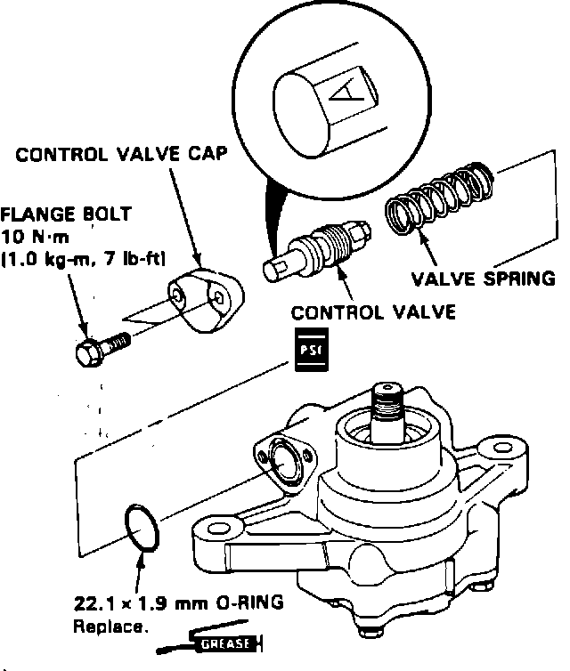

Power Steering Pump - ''Swooshing'' Noise
91acura04
June 17, 1991
BULLETIN NO.
91-034
YEAR MODEL VIN APPLICATION
1991 LEGEND 4 door
Power Steering Pump Noise
VEHICLES AFFECTED
All 1991 Legend 4-doors through engine numbers:
KA models: C32A1-1308706
KL models: C32A1-1002O94
SYMPTOM
Complaints of a hydraulic "swooshing" sound coming from the power steering pump, while turning when the power steering fluid is cold.

CORRECTIVE ACTION
Replace the power steering pump control valve.
1. Remove the power steering pump as described in the service manual.
2. Remove the control valve cap and remove the control valve. Verify the control valve size by looking for the identification letter (A or B) stamped on the valve as shown.
3. Replace the original control valve with a new control valve with the same identification letter. Refer to PARTS INFORMATION.
4. Replace the O-ring and install the new control valve. Reinstall the control valve cap and torque the bolts.
5. Reinstall the power steering pump as described in the service manual.
PARTS INFORMATION
Control Valve A: P/N 56170-PY3-020
Control Valve B: P/N 56180-PY3-020 0-ring 22.1 x 1.9: P/N 91346-PY3-000
WARRANTY INFORMATION
In warranty: The normal warranty applies. Out-of-warranty: Any repair performed after warranty expiration may be eligible for goodwill consideration by the District Service Manager. You must request consideration, and get the DSM's decision, before starting work.
Operation number: 512110
Flat rate time: 1.0 hour (Includes bleeding & road test)
Failed P/N: 56170-PY3-020
Defect code: 042
Contention code: B07